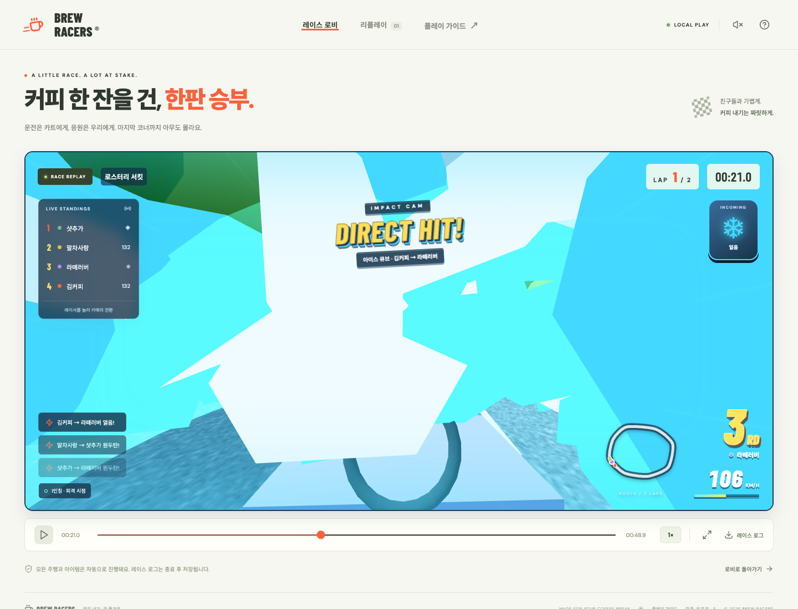

리플레이 화면 재현성 — 검증 중단
실행한 검사 결과 · 2026-09-20T21:36:31.287Z
정지·되감기 전후 캡처의 PNG/픽셀 동일성 검증 불일치. 최신 실행은 새 브라우저 검사 1개 실패, 골든 8개 미실행. 이전 실행에서 기존 브라우저 시나리오 7개는 통과했으나 최종 전체 회귀 통과를 의미하지 않음.
원인 미확정: PNG를 디코딩한 픽셀 해시도 달라지므로 압축 파일 차이만으로 설명할 수 없습니다. 단위 검사에서 시간축 재현성은 통과했으며 화면 합성·렌더링 상태의 추가 조사가 필요합니다.
같은 장애 3회 중단 조건 이후에도 이 화면 재현성 문제의 조사·수정을 재개하라는 명시적 지시. 엄격한 픽셀 동일성 기준은 승인 없이 완화하지 않음.
실패 오류 문맥 · Playwright trace 내려받기

npx playwright show-trace reports/replay-debug/trace.zip